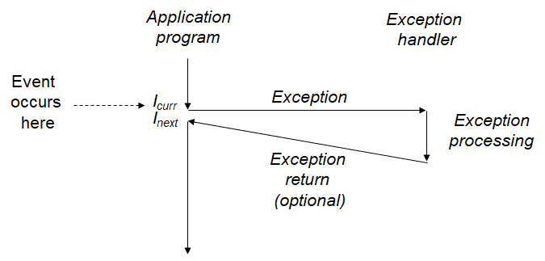
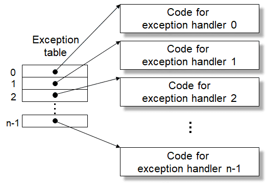
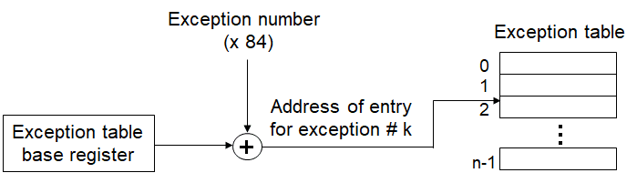

异常控制流
现代系统必须能够对系统状态的变化做出反应，这些系统状态不是被内部程序变量捕获的，而且也不一定要和程序的执行相关。比如，一个硬件定时器定期产生信号，这个事件必须得到处理。包到达了网络适配器后，必须存放在内存中。程序向磁盘请求数据，然后休眠，直到被通知数据已就绪。当子进程终止时，创造这些子进程的父进程必须得到通知。现代系统通过使控制流发生突变来对这些情况作出反应，一般而言，我们把这些突变称为异常控制流。
异常
异常是异常控制流的一种形式，它一部分有硬件实现，一部分由软件实现。异常这个概念可以用生活中例子来类比，比如一个小卖部的老板，如果没有客人，他可能就在那里玩电脑；而如果有客人来买东西，他需要收钱，完成交易后又回去玩电脑。这其实就相当于他在玩电脑的过程中发生了一个异常，客人来了，这时候，他需要处理这个异常，处理完异常后又回到原来的状态。如下图所示。

但计算机和人是不同的，人可以根据不同的情况作出不同处理，也可以改变对某种情况的处理方式。也就是说，对于异常的处理，计算机需要能够提供以下功能：异常的区分以及定制异常的处理程序。
现在系统中为可能的每种类型的异常都分配了一个唯一的非负整数的异常号。其中一些号码是由处理器的设计者分配的，其他号码是由操作系统的设计者分配的。前者的示例包括被零除、缺页、内存访问违例、断点以及算术运算溢出。后者的示例包括系统调用和来自外部I/O设备的信号。
在系统启动时，操作系统分配和初始化一张称为异常表的跳转表，跳转表中的表目k为异常k的处理程序的地址。如下图所示：

在运行时，处理器检测到一个事件，并且确定了相应的异常号k。随后，处理器触发异常，方法是执行间接过程调用，通过查询异常表，得到异常处理程序的地址，然后跳转到相应的处理程序。异常号是到异常表中的索引，异常表的起始地址放在一个叫做异常表基址寄存器的特殊CPU寄存器里。生成异常处理程序的地址的方式如下图所示。

从第一个图中我们就可以看出，异常类似于过程调用，但是有一些重要的不同之处：
- 过程调用时，在跳转到处理程序之前，处理器将返回地址要入栈中。要么是当前指令，要么是下一条指令。
- 处理器也把一些额外的处理器状态压到栈里，在处理程序返回时，重新开始执行被中断的程序的时候会需要这些状态。
- 如果控制从用户程序转移到内核，所有这些项目都被压到内核栈中，而不是压到用户栈中。
- 异常处理程序运行在内核模式下，这意味着它们对所有的系统资源都用完全的访问权限。
异常可以分为四类：中断、陷阱、故障和终止。异常以下的内容：
| 类别 | 原因 | 异步/同步 | 返回行为 |
|---|---|---|---|
| 中断 | 来自I/O设备的信号 | 异步 | 总是返回到下一条指令 |
| 陷阱 | 有意的异常(如系统调用) | 同步 | 总是返回到下一条指令 |
| 故障 | 潜在可恢复的错误(如缺页异常) | 同步 | 可能返回到当前指令 |
| 终止 | 不可恢复的错误 | 同步 | 不会返回 |
Linux提供几百种系统调用，当应用程序想要请求内核服务时可以使用，包括读文件、写文件或是创建一个新进程。每个系统调用都有一个唯一的整数号，对应于一个到内核中跳转表的偏移量。所有到Linux系统调用的参数都是通过通用寄存器而不是栈传递的。按照惯例，寄存器%rax包含系统调用号，寄存器%rdi、%rsi、%rdx、%r10、%r8和%r9包含最多6个参数。第一个参数在%rdi中，第二个在%rsi中，以此类推。
进程及其控制
进程的经典定义就是一个执行中程序的实例。系统中的每个程序都运行在某个进程的上下文中。上下文是由程序正确运行所需的状态组成的。这个状态包括存放在内存中的代码和数据，它的栈、通用目的寄存器的内容、程序计数器、环境变量以及打开文件描述符的集合。进程提供给应用程序的两个关键的抽象：
- 一个独立的逻辑流，它提供一种假象，好像我们的程序独占地使用处理器。
- 一个私有的地址空间，它提供一种假象，好像我们的程序独占地使用内存系统。
一个逻辑流的执行在时间上与另一个流重叠，称为并发流，这两个流被称为并发地运行。多个流并发地执行的一般现象被称为并发。一个进程和其他进程轮流运行的概念称为多任务。一个进程执行他的控制流的一部分的每一时间段叫做时间片。因此，多任务也叫做时间分片。
fork、exec、wait和exit则四个系统调用是和进程相关的最为重要的四个系统调用，其中fork用来创建进程，exec从磁盘上载入并执行某个可执行程序，exit是进程自己退出时要调用的函数，而调用wait函数的进程会等到子进程退出时才继续执行。它们的函数原型如下：
#include <sys/types.h>
#include <unistd.h>
pid_t fork(void);
#include <unistd.h>
int execve(const char *filename, char *const argv[], char *const envp[]);
#include <sys/types.h>
#include <sys/wait.h>
pid_t wait(int *wstatus);
pid_t waitpid(pid_t pid, int *wstatus, int options);
#include <stdlib.h>
void exit(int status);
这里就不在解释每个系统调用的含义了，只要有个印象就可以，遇到不会的就去查man手册。
利用这几个系统调用，可以写一个简单的shell程序。这里程序基本上就是书上的，基本的思想就是读入一行，然后解析参数，如果是内部的命令，就执行；如果不是，就启动子进程执行程序；并且根据是否有&参数，决定是否要等待子进程执行完毕。具体的代码如下：
#include<stdio.h>
#include<string.h>
#include <sys/types.h>
#include <unistd.h>
#include <sys/wait.h>
#include <stdlib.h>
#define MAXLINE 1024
#define MAXARGS 10
extern char **environ;
void eval(char *cmdline);
int parseline(char *buf, char **argv);
int builtinCommand(char **argv);
int main(){
char cmdline[MAXLINE];
while(1){
printf("> ");
fgets(cmdline,MAXLINE,stdin);
if(feof(stdin)){
exit(0);
}
eval(cmdline);
}
return 0;
}
void eval(char *cmdline){
char buf[MAXLINE];
char *argv[MAXARGS];
int bg;
pid_t pid;
strcpy(buf,cmdline);
bg = parseline(buf,argv);
if(argv[0] == NULL){
return;
}
if(!builtinCommand(argv)){
if((pid = fork())== 0){ /* child run user job */
if(execve(argv[0],argv,environ) < 0){
printf("%s: Command not found.\n",argv[0]);
exit(0);
}
}
if(bg == 0){
if(waitpid(pid,NULL,0) < 0){
printf("waitfg: waitpid error");
};
}else{
printf("%d %s",pid,cmdline);
}
}
}
int builtinCommand(char **argv){
if(!strcmp(argv[0],"quit")){
exit(0);
}else{
return 0;
}
}
int parseline(char *buf,char **argv){
char *p = buf;
int index = 0;
buf[strlen(buf)-1] = ' ';/* replace trailing '\n' with space */
while(*p != '\0'){
for(;*p == ' ';p++) /* find first character */
;
if(*p == '\0'){
break;
}
argv[index++] = p;
for(;*p != ' ' && *p != '\0';p++) /* find last character */
;
if(*p == ' '){
*p = '\0';
p++;
}
}
argv[index] == NULL;
if(index >0 && !strcmp(argv[index-1],"&")){
argv[--index] = NULL;
return 1;
}
return 0;
}
信号
信号是一种更高层的软件形式的异常，它允许进程和内核中断其他进程。一个信号就是一条小消息，它通知进程系统中发生了一个某种类型的事件。每种信号类型都对应于某种系统事件。底层的硬件异常通常是由内核异常处理程序处理的，正常情况下，对用户进程而言是不可见的。信号提供了一种机制，通知用户进程发生了这些异常。比如，如果一个进程试图除以0，那么内核就发送给它一个SIGFPE信号。
信号的传递和接收都需要经过内核，信号的接收采取的是轮询的方式。当内核把进程p从内核模式切换到用户模式时，它会检查进程p的未被阻塞的待处理信号的集合。如果这个集合为空，那么内核将控制传递到p的逻辑控制流中的下一条指令。然而，如果集合是非空的，那么内核选择集合中的某个信号k（通常是最小的k），并且强制p接收信号k。收到这个信号会发出进程采取某种行为。一旦进程完成了这个行为，那么控制就传递回p的逻辑控制流中的下一条指令。如果没有自定义信号处理函数，那么操作系统会使用默认的处理函数。默认处理函数是下面几种中的一种：进程终止、 进程终止并转储内存、进程停止直到被SIGCONT信号重启、进程忽略该信号。
个人认为关于信号的特性，以下两点值得注意：1、如果进程有一个类型为k的待处理信号，那么任何接下来发送到这个进程的类型为k的信号都不会排队等待；它们只是被简单地丢弃。2、信号处理程序可以被其他信号处理程序中断。
可以使用以下的方式主动发送信号：
- 使用kill命令发送信号。
- 从键盘发送信号（如Ctrl + C）。
- 使用kill函数发送信号。
- 用alarm向自己发送SIGALRM信号。
kill函数和alarm函数原型如下：
#include <sys/types.h>
#include <signal.h>
int kill(pid_t pid, int sig);
#include <unistd.h>
unsigned int alarm(unsigned int seconds);
编写信号处理函数可以参照以下的一些原则：
- 处理程序要尽可能简单。
- 在处理程序中只调用异步信号安全的函数（可重入的或不能被信号处理程序中断）。
- 保存和恢复errno。
- 阻塞所有信号，保护对共享全局数据结构的访问。
- 用volatile声明全局变量（告诉编译器不要缓存这个变量）。
- 使用sig_atomic_t声明标志（使得对标志的读写都是原子的）。
关于信号的处理，有如下一些常用函数：
#include <signal.h>
int sigprocmask(int how, const sigset_t *set, sigset_t *oldset);
#include <signal.h>
int sigemptyset(sigset_t *set);
int sigfillset(sigset_t *set);
int sigaddset(sigset_t *set, int signum);
int sigdelset(sigset_t *set, int signum);
int sigismember(const sigset_t *set, int signum);
#include <signal.h>
typedef void (*sighandler_t)(int);
sighandler_t signal(int signum, sighandler_t handler);
#include <signal.h>
int sigaction(int signum, const struct sigaction *act, struct sigaction *oldact);
struct sigaction {
void (*sa_handler)(int);
void (*sa_sigaction)(int, siginfo_t *, void *);
sigset_t sa_mask;
int sa_flags;
void (*sa_restorer)(void);
};
下面给出书中对于SIGCHLD信号处理函数：
#include<unistd.h>
#include<signal.h>
#include<string.h>
#include<errno.h>
#include<stdio.h>
#include<stdlib.h>
#include <sys/types.h>
#include <sys/wait.h>
typedef void (*sighandler_t)(int);
extern char **environ;
sighandler_t sigAction(int signum, sighandler_t handler);
void sigchldHandler(int sig);
void addJob(int pid);
void deleteJob(int pid);
int main(int argc, char *argv[]){
int pid;
sigset_t maskAll,maskOne,prevOne;
sigemptyset(&maskOne);
sigfillset(&maskAll);
sigaddset(&maskOne,SIGCHLD);
sigAction(SIGCHLD,sigchldHandler);
int i = 10;
while(1){
if(i-- <= 0){
continue;
}
sigprocmask(SIG_BLOCK,&maskOne,&prevOne);
if((pid = fork()) == 0){
sigprocmask(SIG_SETMASK,&prevOne,NULL);
if(execve("/bin/date",argv,environ) < 0){
fprintf(stderr,"execve error.\n");
exit(0);
}
}
sigprocmask(SIG_BLOCK,&maskAll,NULL);
addJob(pid);
sigprocmask(SIG_SETMASK,&prevOne,NULL);
}
exit(0);
}
sighandler_t sigAction(int signum, sighandler_t handler){
struct sigaction action, oldAction;
action.sa_handler = handler;
sigemptyset(&action.sa_mask);
action.sa_flags = SA_RESTART;
if( sigaction(signum,&action,&oldAction) < 0){
fprintf(stderr,"signal error.\n");
exit(0);
}
return (oldAction.sa_handler);
}
void sigchldHandler(int sig){
int oldErrno = errno;
sigset_t maskAll, prevAll;
pid_t pid;
sigfillset(&maskAll);
while((pid = waitpid(-1,NULL,0)) > 0){ /* reap a zombie child */
sigprocmask(SIG_BLOCK,&maskAll,&prevAll);
deleteJob(pid);
sigprocmask(SIG_SETMASK,&prevAll,NULL);
}
if(errno != ECHILD){
write(STDOUT_FILENO,"waitpid error.\n",15);
}
errno = oldErrno;
}
void addJob(int pid){
printf("add %d to job list.\n",pid);
}
void deleteJob(int pid){
printf("delete %d in job list.\n",pid);
}
书中信号这一章还有一个比较重要的例子就是显示的等待信号。代码如下：
#include<unistd.h>
#include<signal.h>
#include<string.h>
#include<errno.h>
#include<stdio.h>
#include<stdlib.h>
#include <sys/types.h>
#include <sys/wait.h>
void sigchldHandler(int sig);
volatile sig_atomic_t pid;
int main(int argc, char *argv[]){
sigset_t mask,prev;
sigemptyset(&mask);
sigaddset(&mask,SIGCHLD);
signal(SIGCHLD,sigchldHandler);
int i = 10;
while(i--){
sigprocmask(SIG_BLOCK,&mask,&prev);
if(fork() == 0){
sleep(1);
exit(0);
}
pid = 0;
while(pid == 0){
printf("pid = %d.\n",pid);
sigsuspend(&prev);
}
sigprocmask(SIG_SETMASK,&prev,NULL);
printf("reap child process.\n");
}
exit(0);
}
void sigchldHandler(int sig){
int oldErrno = errno;
pid = waitpid(-1,NULL,0);
errno = oldErrno;
}
其实这种轮询加休眠的机制在生产者消费者模式中也有应用，其实只要记住一点，条件判断是不够的，必须要轮询才行。